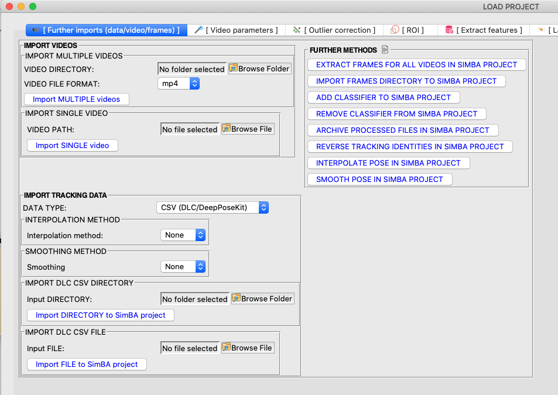

Scenario 1 walkthrough
To faciliate the initial use of SimBA, we provide several use scenarios. We have created these scenarios around a hypothetical experiment that take a user from initial use (completely new start) all the way through analyzing a complete experiment and then adding additional experimental datasets to an initial project.
All scenarios assume that the videos have been pre-processed and that DeepLabCut CSV pose-estimation tracking files have been created.
Hypothetical data set:
Three days of resident-intruder testing between aggressive CD-1 mice and subordinante C57 intruders. Each day of testing has 10 pairs of mice, for a total of 30 videos recorded across 3 days. Recordings are 3 minutes in duration, in color, at 30fps.
Also, so that we do not overfit the predictive classifiers to the experimental data, a different set of pilot videos have been recorded of resident-inturder pairings using identical video acquisition parameters. A total of 20 pilot videos were recorded.
Scenario 1: From scratch…
In this series of Scenarios, you have the above pilot videos and DLC tracking data, the experimental videos and DLC tracking data, and SimBA. All videos have been pre-processed and DLC tracked. You now would like to generate a new predictive classifier for “Behavior that Will Get a Nature Paper (Behavior BtWGaNP)”. In this first Scenario, we will use the pilot data to generate the classifier for behavior BtWGaNP. In later scenario tutorials, we will use this predictive classifier to classify BtWGaNP behaviours for Day 1 of the experiment (Scenario 2, add behavioural data with the goal of improving the behavioral classifier (Scenario 3, and use the predictive classifier to classify behaviour BtWGaNP for Day 2 of the experiment (Scenario 4).
Pipeline breakdown:
For processing datasets, the pipeline is split into a few sections. These sections are listed below along with their corresponding functions:

Part 1: Create a new project
Part 2: Load project
Part 1: Create a new project
This section describes how to create a new project for behavioral classifier predictions.

Step 1: Generate Project Config
In this step you create your main project folder, which will then auto-populate with all the required sub-directories.
In the main SimBA window, click on
Fileand andCreate a new project. The following windows will pop up.
{kind=link}
Navigate to the
[ Generate project config ]tab. Under General Settings, specify aProject Pathwhich is the directory that will contain your main project folder.Project Nameis the name of your project. *Keep in mind that the project name cannot contain spaces. We suggest to instead use underscore “_“*In the
SML Settingssub-menu, put in the number of predictive classifiers that you wish to create. For an example, in Scenario 1 we would like to create a single classifier. We will enter the number 1. Note that in the real world you would probably want to create multiple classifiers concurrently as this would decrease the number of times a video would need to be manually annotated. For simplicity, we will here create a single classifier. Note: If you are using SimBA only for region of intrest (ROI) analysis, and do not wish to create any classifiers, enter ``1`` in this entry box.Click a single time, and it creates a row as shown in the following image. In each entry box, fill in the name of the behavior (BtWGaNP) that you want to classify. If you click too many times, as long as you leave the extra boxes empty, all is well. Note: If you are using SimBA only for region of intrest (ROI) analysis, and do not wish to create any classifiers, enter any name in the the single entry box.

The sub-menu
Animal Settings - # configis used to specify the number of animals and body parts that that the pose estimation tracking data contains. The default for SimBA is 2 animals and 16 body parts (2 animals, 16bp). There are a few other - yet not validaded - options, accessible in the dropdown menu. This selection is the annotation configuration you should have previously used when labelling images in DeepLabCut or DeepPoseKit - see the tutorial for Pose estimation body-part labelling for more information.
The second drop-down in the Animal Settings menu is the
Type of Tracking menu. In the current scenario we will leave this at
the default Classical tracking. Classical tracking is used when
your videos contain one animal, or two animals that are clearly (by eye)
discriminable, such as a white and a black coated animal. A second
option in the Type of Tracking dropdown menu is Multi tracking.
Select the Multi tracking option from the Type of Tracking
dropdown menu only when the animals in your protocol are not
discriminabl by eye and you have used newer pose-estimation tools to
perform your animal tracking. These newer tools include multi-animal
DeepLabCut DLC version
>=2.2b5
and SLEAP. In this tutorial we will use
Classical tracking. If you have multi-animal tracking data from
DeepLabCut
>=2.2b5
or SLEAP, then head over to the seperate
tutorial on Import multi-animal data to learn how to import this data
into SimBA. Come back to this tutorial after you have completed the
Import multi-animal data tutorial and your multi-animal data has been
imported into SimBA.
Note
If you want to use a different body-part configuration that is not shown in the drop-down menu - go tho the tutorial for creating user-defined pose-configurations in SimBA.
Click on
Generate Project Configto generate your project. The project folder will be located in the specifiedProject Path. The Project will remain open, and the main console will report that the project has been created.
Step 2: Import videos into project folder
In general, you can choose to import either one or multiple videos. The imported videos are used for visualizing predictions, standardizing distances across videos by calculating metric distances from pixel distances, and annotating behaviours for supervised machine learning classifiers.
In this current Scenario 1, we now want to import the 20 pilot videos that we will use to train the classifier for Behavior BtWGaNP.
Note
There are several considerations when selecting the number of videos for training classifers. Most importantly, the number of videos is not as important as the total number of behavioral events present within the videos. Using something that is frequent, such as attacks, may only require a handfull of videos; using something that is less frrequent, such as lateral threat displays, will require more videos for the same number of events. Further, the expression of these behaviors should be representative of the overall experimental data (i.e., attack behaviors exhibited should generalize to how attacks normally look, and not only be extremely robust or extemely weak). Lastly, you need enough videos that some can be left over to validate the generated predicitive classifiers against. We do not want to test the classifiers on videos that have been used to generate the classifiers. Here we import 20 videos, having identified that 19 videos contain enough events of Behavior BtWGaNP to get an acceptable sample, and that the remaining video will be used for validation. As a sanity check, we can also create rendered visualizations of the data that is processed in the subsequent days and phases of Scenarios 2-4. We will also evaluate the accuracy of the predictive classifier using various evaluation tools built into SimBA.

To import multiple videos
Navigate to the
[ Import videos into project folder ]tab.Under the
Import multiple videosheading, click onBrowse Folderto select a folder that contains all the pilot videos to import into your project.Enter the file type of your videos. (e.g., mp4, avi, mov, etc) in the
Video typeentry box.Click on
Import multiple videos. >Note: If you have a lot of videos, or exceptionally high resolution/frame rate/duration videos, it might take a few minutes before all the videos are imported. The main SimBA terminal window will report when the process is complete.
Step 3: Import DLC Tracking Data
In this step, you will import your pose-estimation tracking data from DeepLabCut in CSV file format. For the pilot videos, this means that you should have 20 individual CSV files corresponding to each of the individual videos.
Note
DLC outputs CSV files with exceptionally long file names. We have included a function that will automatically copy the DLC CSV files, remove the excess DLC notations from the filename, and paste the new CSV files within the SimBA project. The new CSV will now have the same name as the corresponding video. The original DLC output CSV will still be present in its original folder.

To import multiple DLC csv files
Navigate to the
[ Import tracking data ]tab. The first dropdown menu specify your file-type. In this tutorial we are importing CSV files from DLC and we will leave this at the default (CSV (DLC/DeepPoseKit)). If you have pose-estimation data in alternative file-formats, for example from multi-animal DLC or SLEAP, then please see the seperate SimBA multi-animal tutorial for how to import this data.Under the
Interpolate missing pose-estimation dataheading, select how SimBA should handle missing animals in your pose-estimation input files. For best classifier performance, it is important that the animals are present in all the videos throughout the recording. We recommend that you use the SimBA video clipping tools to remove time-segments of the video where the animals are absent from the recorded arena. However - if clipping the videos is not an option - then we can tell SimBA to interpolate the missing values.
You can tell SimBA to only interpolate frames where entire animals are
missing (the Animal(s): Nearest, Animals(s): Linear and
Animal(s) Quadratic options in the dropdown menu shown below) or you
can tell SimBA to interpolate every occurance of a missing body-part
(the Body-parts: Nearest, Body-parts: Linear and
Body-parts: Quadratic options in the dropdown menu shown below). For
both option, SimBA offers three methods of interpolation - linear,
nearest, and quadratic. Figures that show the differences between
interpolation methods can be found
HERE
or
HERE.
{kind=link}

Note
We recommend that you make sure that the animals are not absent from the video recording and that you pre-process the videos by removing video segments where the animals are not present, before performing pose-estimation and importing the data into SimBA. Interpolations will result in feeding inaccurate data into SimBA and should be avoided where possible.
Occasionally, the data coming out of pose-estimation packages is “jittery”, and body-part predictions show small, but unrealistic, “jumps” between sequential frames. “Smoothing” is an optional pre-processing step where the pose-estimation predictions, in any given frame, are averaged with the predictions in the preceding and proceeding frames. This pre-processing step can serve to generate more realistic and truthful tracking predictions. For a before-and-after video example of expected output of “smoothing”, check out THIS VIDEO.
SimBA allows the option to smooth the post-estimation data using a
Gaussian
or a Savitzky
Golay
kernel when importing the data. To perform Gaussian smoothing, select
Gaussian in the “Smoothing data” dropdown menu. To perform
Savitzky-Golay smoothing, select Savitzky Golay in the “Smoothing
data” dropdown menu. Once selected in the dropdown, an entry box titled
Time window (ms) will be displayed next to the drop-down menu, like
in the image below. In this entry box, we specify a time window in
milliseconds (e.g., 200). This time window will be used by SimBA in the
background to identify the preceding and proceeding frames, the
pose-estimation predictions in those frames, and how much influence
those predictions should have when correcting the current prediction. If
you are unsure what value to use, I recommend to begin with a value
somewhere between 100-300. In this tutorial we will skip smoothing
of your pose-estimation data, and select None in the Smoothing
drop-down menu.
Note
After performing interpolation and/or smoothing, we
may want to visualize the results before proceeding with the rest of
the analysis pipeline; to confirm the interpolation and/or smoothing
improves the pose-estimation tracking. To visualize the results, I
recommend to use the Visualize pose estimation in
folder
function that can be accessed throught the
Tools
menu in the main SimBA terminal.

Under the
Import multiple csv filesheading, click onBrowse Folderto select the folder that contains the CSV files that you wish to import into your project. Click onImport csv to project folder.
Note
SimBA also provides the ability to import single videos and their corresponding CSV files. For more information, click here. This method is not used in Scenario 1.
Part 2: Load project
In Part 1, we created a project. To continue working with this project, we must load it. This section describes how to load and work with SimBA projects.
Step 1: Load Project Config
In this step you will load the project_config.ini file that was created. > Note: A project_config.ini should always be loaded before any other process.
In the main SimBA window, click on
FileandLoad project. The following windows will pop up.
{kind=link}
Click on
Browse File. Then, navigate to the directory that you created your project in and click on your project folder. Locate the project_config.ini file and select it. Once this step is completed, theFile Selectedentry box should look like the following, and you should no longer see the text No file selected:

In this image, you can see the Desktop is my selected working
directory, tutorial is my project name, and the last two sections of
the folder path is always going to be
project_folder/project_config.ini.
Step 2 (Optional step) : Import more DLC Tracking Data or videos
In this step, you can choose to import more pose estimation data and/or more videos. You can only archive analysed files, define new classifiers, and remove previously defined classifiers. If this isn’t relevant then you can skip this step. This is however relevant for Scenario 4 and you can read more about these options in the Scenario 4 tutorial. However, this is not relevant for the current Scenario 1, so please skip to Step 3 (but remain aware you can do this if needed later).
{kind=link}
Click on the
[ Further imports (data/video/frames) ]tab. From here you can import more data or videos into the project folder. The imported .csv files will be placed in theproject_folder/csv/inputdirectory, and the imported videos will be placed in theproject_folder/videosdirectory.Once the videos are imported, you can extract frames from the additional videos by clicking on
Extract framesunder the Extract further frames into project folder heading.If you already have existing frames of the videos in the project folder, you can import the folder that contains the frames into the project. Under the Import frame folders heading, click on
Browse Folderto choose the folder thar contains the frames, and click onImport frames. The frames will be imported into theproject_folder/frames/inputfolder.If you would like to add a new classifier to the current project, type the name of the new classifier in the
Classifierentry box in theAdd new classifier(s)sub-menu.If you would like to remove a previously defined classifier from the current project, click on
Choose a classifier to removein theRemove existing classifiers(s)submenu. Once clicked, a window will appear with a dropdown menu where you select the classifier you wish to remove from the current project.Once you have analyzed your videos, and/or used videos to create classifiers in SimBA (see Scenario 4), you may want to archive your analyzed files to prevent them from being analyzed by SimBA again. Use the
Archive processed filesmenu to enter a folder name for your analyzed files and click onArchiveto move your analyzed files into this folder.
Step 3: Set video parameters
In this step, you can customize the meta parameters for each of your videos (fps, resolution, metric distances) and provide additional custom video information (Animal ID, group etc). This can be very helpful when analyzing data later on. Are there any groups, conditions, days, treatments, etc, that will make your analysis easier? Note that if youd like to change any of these parameters, you can do so with the SimBA video pre-processing tools. Note that the video pre-processing should be performed prior to analyzing the videos through DeepLabCut, SLEAP, or DeepPoseKit.
Importantly, in these menues, you also set the pixels per millimeter for all of your videos. You will be using a tool that requires the known distance between two points (e.g., the cage width or the cage height) in order to calculate pixels per millimeter. We calculate this measure in each video so that we can standardize variables in metric units, and no longer become bound by working with pixel location data. This means that it does not matter if your camera moved slighly across different video recording sessions.
Under Set video parameters (distances,resolution,etc.), the entry box named
Distance in mmis the known distance between two points in the videos in millimeters. If the known distance is the same in all the videos in the project, then enter the millimeter value (e.g,: 245) and click onAuto populate Distance in mm in tables. This will auto-populate the table in the next step (see below). If you leave theDistance in mmentry box empty, the known distance will default to zero and you will fill in the value for each video individually.Click on
Set Video Parametersand the following windows will pop up.
{kind=link}
In the above example we imported the 20 pilot videos and their names are listed the left most
Videocolumn. SimbA auto-populated the known distance to 245 millimeter in the previous step, and this is now displayed in theDistance in mmcolumn.You can click on the values in the entry boxes and change them until you are satisfied. By default, the entry boxes are populated with the meta data from the video files.
Regardless if you updated the values in the table or not, click on
Update distance_in_mmat the top of the window: this will save the information displayed in the table into a CSV file. The CSV file is saved as video_info.csv and is stored in theproject_folder\logsfolder. After clicking on theUpdate distance_in_mmbutton, you can proceed to the next step.Next, to get the
Pixels/mmfor the first video, click onVideo1and the following window will pop up. The window that pops up displays the first frame ofVideo1.
Note
When the frame is displayed, it may not be shown at the correct aspect ratio. To fix this, drag the window corner to the correct aspect ratio.

Now, double left click to select two points that defines the known distance in real life. In this case, we know that the two pink connected dots represent a distance of 245 millimeter in real life.

If you misplaced one or both of the dots, you can double click on either of the dots to place them somewhere else in the image. Once you are done, hit
Esc.

If every step is done correctly, the
Pixels/mmcolumn in the table should populate with the number of pixels that represent one millimeter,
{kind=link}
Repeat the steps for every video in the table, and once it is done, click on
Save Data. This will update the CSV file named video_info.csv in/project_folder/logdirectory that contains your video meta data.
Note
If you have a a very large amount of videos then this process
(Step 10 above) can become time-consuming. If you are confident that
your camera moved minimally across recordings, and that the
Pixels/mm therefore is near-identical across videos, then SimBA
has the option of applying the Pixels/mm created for the first
video in the table, on all other videos in the table. To proceed with
this, click on the red Duplicate index 1 pixel/mm (CAUTION!)
button.
{kind=link}
You can also chose to add further columns to the meta data file (e.g., AnimalID or experimental group) by clicking on the
Add Columnbutton. This information will be saved in additional columns to your video_info.csv file.
Step 4: Outlier Correction
Outlier correction is used to correct gross tracking inaccuracies by detecting outliers based on movements and locations of body parts in relation to the animal body length. For more details, click here. The annotation options are based upon the yaml.config settings, and we suggest that defaults be kept. The only values that must be manually entered in the Settings menu are the Location Criterion and the Movement Criterion, explained below.
Click on
Settingsand the following window will pop up.

Select the body parts for Animal 1 and Animal 2 that you want to use to calculate a reference value. The reference value will be the mean or median Euclidian distance in millimeters between the two body parts of the two animals in all frames. Again, we suggest you keep the default settings.
Enter values for the
Movement criterionand theLocation criterion.
Movement criterion. A body part coordinate will be flagged and corrected as a “movement outlier” if the body part moves the reference value multiplied by the criterion value across two sequential frames. The reference value is the mean or median length of the animal between the selected two body parts. The criteron value is a multiplier of the reference value. For example, the distance between Nose_1 and Tail_base_1 is 100mm and the movement criterion is 0.5, any body part that moves 50mm across two sequential frames will be corrected. We suggest a movement criterion value between 0.7 to 1.5.Location criterion. A body part coordinate will be flagged and correct as a “location outlier” if the distance between the body part and at least two other body parts belonging to the same animal are longer than the reference value multiplied by the criterion value within a single frame. The reference value is the mean or median length of the animal between the selected two body parts. The criteron value is a multiplier of the reference value. For example, the distance between Nose_1 and Tail_base_1 is 100mm and the location criterion is 1.5, any body part located greater than 150 mm from two other body parts will be corrected. We suggest a location criterion value of 1.5 or greater.
Note
Movement outliers are corrected prior to location outliers. Specifically, (i) movement outliers are first corrected, and (ii) location outliers are then corrected on the dataframe that contains the movement corrected data. That means that there is likely to be fewer location outliers than movement outliers corrected.
Body parts flagged as movement or location outliers will be re-placed in their last reliable coordinate.
Chose to calculate the median or mean Euclidian distance in millimeters between the two body parts at the bottom of the
Settingswindow and click onConfirm Config.Click to run the outlier correction. You can follow the progress in the main SimBA window. Once complete, two new CSV log files will appear in the
/project_folder/logfolder. These two files contain the number of body parts corrected following the two outlier correction methods for each video in the project. The files will look similar to the worksheets in this Microsoft Excel file.
Note
In some scenarios, SimBA users are confident that the
pose-estimation is perfected, no gross innacuracies are present, and
the user may want to completely skip the use of SimBAs outlier
correction tools. To do this, click on the red
Skip outlier correction (CAUTION) button. Clicking on this button
will format your CSV files and make them compatible with subsequent
procedures (see below) without removing any outliers from you
tracking data.
Note
Some users are are primarily intrested in using SimBA for other things than predictive classification. This may include using SimBA for analyzing animal movements, the animals directionality or “gaze”, animal velocities / distance travelled, or time spent / entries made into user-defined regions of interest. If you are inrested in using these functions in SimBA, you now have all the data you need and do not need to proceed with the current tutorial. Instead, head to the SimBA ROI tutorial.
Step 5: Extract Features
Based on the coordinates of body parts in each frame - and the frame rate and the pixels per millimeter values - the feature extraction step calculates a larger set of features used for behavioral classification. Features are values such as metric distances between body parts, angles, areas, movement, paths, and their deviations and rank in individual frames and across rolling windows. This feature set extracted from the tracking data is what we are going to use to predict behavior BtWGaNP, using the relationships between features, rather than the pose estimation data itself.
This set of features will depend on the body-parts tracked during pose-estimation (which is defined when creating the project). Click HERE for an example list of features when tracking 2 mice and 16 body parts. Click HERE for an example set of features when using a user-defined body-part configuration.
Note
Some users of SimBA have their own third-party python feature extraction class, and want to use that class within the SimBA GUi environment. This may be helful when there is a specific set of features, not calculated in the SimBA default feature extraction code, that will be helpful for downstream ML algorithms. To learn how to use third-party feature extraction classes in SimBA, click HERE.
Note
Some users may want to take advantage of a sub-set of the feature extraction method in SimBA, and use that output data within their own third-party applications outside of the SimBA environment. E.g., users may just want to calculate angles, movements and/or sizes of the animals and save that data in CSV format. To learn how to do this in SimBA, click HERE.
Click on the tab
Extract Features, and then the buttonExtract Features.
{kind=link}
New CSV files, that contain the feature data and the pose-estimation
data, will be generated and saved in the
project_folder\csv\features_extracted directory, with one file for
every DLC tracking file imported to the project. This tab also displays
a second button - Append ROI data to features. We explain the
function of this button in the ROI
tutorial,
and how it can be used to create features from spatial locations/objects
in the videos.
We want to validate the classifier for behavior BtWGaNP on a separate video, and that video should not be used in the training and testing steps. In the current Scenario 1, we have generated 20 files containing features and they are stored in the
project_folder\csv\features_extractedfolder. To store away one of these files for later validation, navigate to theproject_folder\csv\features_extractedfolder, and cut one file out of theproject_folder\csv\features_extractedfolder, and paste it somewhere else outside of yourproject_folder. This way, SimBA won’t see the file in later steps, and it will be omitted from inclusion for when creating the model. We will later define the directory path to this file, and try to predict behavior BtWGaNP in this file from the classifer generated using data in the other 19 data files.
Step 6: Label Behavior (i.e, create annotations for predictive classifiers)
This step is used to label the behaviors in each frames of a video. This data will be concatenated with the extracted features and used for the creating behavioral classifier.
Note
SimBA performs similar functions such as the open-source JWatcher or commercial Noldus Observer systems, with the exception that SimBA automates the backend integration of behavioral annotation with creating predictive classifiers. If you already have such annotations stored in alternative file formats, like JWatcher or Noldus Observer, they can be appended directly to the tracking data and no behavioral annotations needs to be done in SimBA. For example, the CRIM13 dataset was annotated using ‘Piotr’s Matlab Toolbox’ and we appended these annotations to the tracking data using a version of this script.
If you already have annotation videos created with these alternative tools, or any other behavioral annotator, and would like to use them to create predictive classifiers, please let us know as we would like to write scripts that could process these data for SimBA. If you have created such scripts yourself, please consider contributing them to the community!
Note
The behavioral labelling is a critical step. A computer will only learn what you teach it, so if your annotations are not correct then the classifiers will fail. SimBA uses every single frame, and therefore the “start” and “stop” frames for a given behavior are very important. Please take the time to create clear and well-defined operationalized definitions of the complete behavior, including start and stop frames. As an example, here are machine learning operationalized definitions of mouse and rat predictive classifiers for aggressive behaviors in resident-intruder protocols.
Click on the
Label Behaviortab in theLoad Projectwindow and you should see the following menu:

Use the first button (i) in the image above if you are starting to create behavior labels for a video from scratch. Use the second button (ii) to continue annotating a video that you have made behavior labels for previously in the current project. In the third menu (iii) we have button-click access to functions that append behavior labels generated in third-party apps to your SimBA dataset. To read more about how to append annotations created in third-party applications, click HERE.
In the current scenario, we want to click on the first button -
Select video (create new video annotation). In your project folder, navigate to the/project_folder/videosfolder and select the video file (e.g., mp4 or avi file) representing the video you wish to annotate.

Please click here to learn how to use the behavior annotation interface.
Once finished, click on
Generate/Saveand it will generate a new CSV file in project_folder/csv/targets_inserted folder. Repeat this step for all the files you wish you use to generate the predictive classifier for behavior BtWGaNP.
Note
If you used SimBAs behavior label annotation interface to
create behavior labels for the first half of your video, and now you
want create labels for the second half of a video, then you can do so
by clicking on the second button in the Label Behavior menu
titled Select video (Continue with existing video annotation).
After clicking on this button, follow the same steps as when creating
a new annotations. The difference with clicking on this button will
be that when the SimBA behavior label interface shows up, it will
show up from the last saved frame with your previous annotations for
this file in memory.
Step 7: Train Machine Model
This step is used for training new machine models for behavioral classifications in SimBA. There are a range of machine learning settings (called hyper-parameters) data sampling method, and evaluation settings, that influence the performance of the classifiers and how it is interpreted. We have currated a list of parameters and sampling methods that can be tweaked and validated. For more technical explanations, see the scikit-learn RandomRandomForestClassifier API or join the discussion on our Gitter page.
To facilitate use and make this step as painless as possible, users can import hyper-parameters, sampling and evaluations setting from pre-packaged CSV files (SEE BELOW). This may be a lot to look at, so please read this whole section before starting to build your own classifiers.
Note
SimBA allows you to generate predictive classifiers in two different modes. You can either (i) specify a single set of hyperparameters, and train a single predictive classifiers using that defined set of hyperparameters. Alternatively, you can (ii) specify many different Hyperparameter settings, and batch train multiple different models, each using a different set of Hyperparameters. The second option is relevant for the current Scenario. For example, here we may want to generate five different classifiers that all predict the behavior BtWGaNP. We want to evaluate each one, and proceed to the Experimental data with the classifier that best captures behavior BtWGaNP in the pilot data and validation video. Thus, the first section of this part of the tutorial describes the different Hyperparameter settings, and what you can do to avoid setting them manually (HINT: you can load them all from a metadata file at the top of the window), while the second part of the tutorial section describes how to proceed with either of the two modes for generating classifiers.
Train predictive classifier(s): settings
Click on SETTINGS in the [TRAIN MACHINE MODEL] tab and the
following, slightly indimidating (but I promise: easy to use!) window
will pop up. We will go over the meaning of each of the settings in
turn.

1. LOAD META DATA. If you have a CSV file containing hyperparameter
metadata, you can import this file by clicking on Browse File and
then click on Load. This will autofill all the Hyperparameter entry
boxes and model evaluation settings. For the Scenario 1, we
provide
a Metadata file that will populate the Hyperparameter entry boxes and
evaluation settings with some default values. Please save this file to
disk and load it. If you downloaded SimBA through our github page, the
Metadata file should be in the simba/misc directory. Alternatively,
there is an up-to-date meta
fileHERE
which covers additional newer settings recently included in SimBA
(including class weights ans shapley values).
2. MACHINE MODEL ALGORITHM. Choose a machine model algorithm to use
from the drop down menu: RF ,GBC,Xboost. For this
scenario, we will choose RF (Note:: GBC and XGBoost options are still
under development).
3. BEHAVIOR. Use the drop-down menu to select the behavioral classifier you wish to define the hyper-parameters for. In this Scenario, only one BEHAVIOR should be seen in the drop-down menu (BtWGaNP). If you are generating multiple classifiers, they should all be seen in the drop-down menu.
4. RANDOM FOREST ESTIMATORS. The number of decision trees we should
use in our classifier. Typically a value between 100-2000. In most
instances, a higher value won’t hurt you. If you have a large dataset
and are seeing MemoryError while building the classifier, then try
to decrease the number of estimators.
5. MAX FEATURES. Number of features to consider when looking for the
best split. Select sqrt from the dropdown to use the square root of
the total number of features in your dataset when evaluating a split.
Select log from the dropdown to use the log of the total number of
features in your dataset when evaluating a split. Select None from the
dropdown to use all of the features in your dataset when evaluating a
split.
6. CRITERION. Select the metric used to measure the quality of each split (gini or entropy).
7. TEST SIZE. Select the ratio of your data that should be used to
test your model. For example, selecting 0.2 from the drop-down will
results in the model beeing trained on 80% of your data, and tested on
20% of your data.
8. TRAIN TEST SPLIT TYPE. Select how you want to sample annotated
frames for training and testing data-sets. If you select FRAMES,
then randomly selected frames will be assigned to the training and
testing datasets. Although such a random selection can create accurate
classifiers, the performance metric may be inflated due to time-series
information leakage between the training and test-sets. For more
information, see
HERE.
To decrease the potential of such leakage, select BOUTS from the
Train-Test Split Type drop-down menu. If you select BOUTS, then
none of the annotated frames in the classifier training set will come
from the same annotated behavior bout as in the classifier testing set.
We encurage users to validate their
classifiers
outside of classifier training before proceeding. See the below image
for an illustration of using FRAMES vs BOUTS Train-Test Split
Types:

9. MINIMUM SAMPLE LEAF. The minimum number of samples required to be a leaf node (e.g., 1, or increase this value to prevent over-fitting).
10. UNDER-SAMPLE SETTING. random undersample or None. If
random undersample, a random sample of the majority class
annotations (usually behavior absent) will be used in the training set.
The size of this sample will be taken as a ratio of the minority class
(usually behavior present) and the ratio is specified in the
under-sample ratio box (see below). For more information, click
HERE
or
HERE.
This setting address issues that arise from “imbalanced” data sets,
where the behavior that is predicted is sparse. Note: Class means
the classification that a video frame belongs to. In this Scenario it is
either (i) Not BtWGaNP, or (ii) BtWGaNP. The majority class is the class
of frames that contains the most examples, which - most certaily - in
any use case of SimBA, will be Not BtWGaNP. Conversely, the minority
class is the class of frames that contains the least examples, which
will be BtWGaNP.
Note
If your behavior is sparse (say you have annotated the behavior
to be present in 1-10% of the total number of frames), see if you can
improve your classifier by setting the UNDER-SAMPLE SETTING to
random undersample and the under-sample ratio to 1.
11. UNDER-SAMPLE RATIO. The ratio of behavior-absent annotation to
behavior-present annotation to use in the training set. For example, if
set to 1.0, an equal number of behavior-present and behavior-absent
annotated frames will be used for training. If set to 2.0, twice as
many behavior-absent annotatations than behavior-present annotations
will be used for training. If set to 0.5, twice as many
behavior-present annotatations than behavior-absent annotations will be
used for training.
12. OVER SAMPLE SETTING. SMOTE, SMOTEEN or None. If
“SMOTE” or “SMOTEEN”, synthetic data will be generated in the minority
class based on k-mean distances in order to balance the two classes. See
the imblearn API for details on
SMOTE
and
SMOTEEN.
13. OVER SAMPLE RATIO. The desired ratio of the number of samples in
the minority class over the number of samples in the majority class
after over synthetic sampling. For example, if 1.0, N number of
synthetic behavior-present annotations will be created so the total
count of behavior-present (synthetic and real) equals the total count of
behavior-absent annotated frames.
14. CLASS WEIGHT SETTINGS. Although random undersampling
discussed in point 9 above can produce accurate classifiers, it has
a major drawback. When performing undersampling we basically chuck out a
bunch of data from the minority class. Instead, we may want to keep
all the data, but value accurate observations of the minority class
equally to the observations in the majority class by assigning weights
to the different classes. To do this, select
`balanced <https://scikit-learn.org/stable/modules/generated/sklearn.ensemble.RandomForestClassifier.html>`__
or
`balanced_subsample <https://scikit-learn.org/stable/modules/generated/sklearn.ensemble.RandomForestClassifier.html>`__
in the class weight settings dropdown.
You can also assign your own weights to the two different classes of
observations (behavior-present versus behavior-absent) by selecting the
custom option in the class weight settings dropdown. For
example, setting behavior PRESENT to 2, and behavior ABSENT to 1
will lead the classifier to attribute twice the importance to behavior
present annotatons over behavior absent annotations.
{kind=link}
15. CREATE MODEL META DATA FILE. Creates a CSV file listing the
hyper-parameter settings used when creating the classifier. The
generated meta file can be used to create further models by importing it
in the LOAD SETTINGS menu (see Step 1 above).
16. CREATE Example Decision Tree - graphviz. Saves a visualization of a random decision tree in PDF and .DOT formats. Requires graphviz. For more information on this visualization, click here. For information on how to install on Windows, click here. For an example of a graphviz decision tree visualization generated through SimBA, click here. Note: The trees can be very large depending on the Hyperparameter settings. Rather than using a dedicated PDF viewer, try opening the generated PDF by dragging it into a web browser to get a better view.
17. Fancy Example Decision Tree - dtreeviz. Saves a nice looking visualization of a random decision tree in SVG format. Requires dtreeviz. For an example of a dtreeviz decision tree visualization generated through SimBA, click here. Note: These SVG example decision trees are very large. To be able to view them on standard computers, SimBA limits the depth of the example tree to 3 levels.
{kind=link}
18. Create Classification Report. Saves a classification report truth table in PNG format displaying precision, recall, f1, and support values. For more information, click here. For an example of a classification report generated through SimBA, click here.
{kind=link}
19. Create Features Importance Bar Graph. Creates a CSV file that lists the importance’s (gini importances). For an example of a feature importance list generated through SimBA, click here. Also creates a bar chart depecting the top N features features in the classifier. For an example of a bar chart depicting the top N features generated through SimBA, click here Note: Although gini importances gives an indication of the most important features for predicting the behavior, there are known flaws when assessing well correlated features. As SimBA uses a very large set of well correlated features to enable flexible usage, consider evaluating features through permutation importance calculatations instead or shapley values (see below).
{kind=link}
20. # Features. The number of top N features to plot in the
Create Features Importance Bar Graph.
21. Compute Feature Permutation Importances: Creates a CSV file listing the importance’s (permutation importance’s) of all features for the classifier. For more details, please click here). Note that calculating permutation importance’s is computationally expensive and takes a long time. For an example CSV file that list featue permutation importances, click [here] (https://github.com/sgoldenlab/simba/blob/master/images/BtWGaNP_prediction_permutations_importances.csv).
22. Create Learning Curves: Creates a CSV file listing the f1 score at different test data sizes. For more details on learning curves, please click here). For more information on the f1 performance score, click here. The learning curve is useful for estimating the benefit of annotating further data. For an example CSV file of the learning curve generated through SimBA, click here.
23. Learning Curve Shuffle K Splits: Number of cross validations applied at each test data size in the learning curve.
24. Learning Curve shuffle Data Splits: Number of test data sizes in the learning curve.
25. Create Precision Recall Curves: Creates a CSV file listing
precision at different recall values. This is useful for titration of
the false positive vs. false negative classifications of the models by
manipulating the Discrimination threshold (see below). For an
example CSV file of of a precision-recall curve generated through SimBA,
click
here.
This may be informative if your aiming to titrate your classifier to (i)
predict all occurances of behavior BtWGaNP, and can live with a few
false-positive classifications, or (ii) conversely, you want all
predictions of behavior BtWGaNP to be accurate, and can live with a few
false-negative classifications, or (iii) you are aiming for a balance
between false-negative and false-positive classifications.
26. Calculate SHAP scores: Creates a CSV file listing the contribution of each individual feature to the classification probability of each frame. For more information, see the SimBA SHAP tutorial and the SHAP GitHub repository. SHAP calculations are an computationally expensive process, so we most likely need to take a smaller random subset of our video frames, and calculate SHAP scores for this random subset.
27 # target present: The number of frames (integer - e.g., 100)
with the behavioral target present (with the behavioral target being
the behavior selected in the Behavior drop-down menu in Step 3
above) to calculate SHAP values for.
28 # target absent: The number of frames (integer - e.g., 100)
with the behavioral target absent (with the behavioral target being
the behavior selected in the Behavior drop-down menu in Step 3
above) to calculate SHAP values for.
ADDITIONAL SETTINGS NOT YET DOCUMENTED ABOVE:
SHAP save cadence SHAP calculations are an computationally expensive, and calculating SHAP values on larger datasets come with long run-times. As a safety pre-caution, you can intermittently save your SHAP values to disk. For example, if you want to save your data every 100 frames, set this value to a 100. If you want to save the data only when all SHAP calculations are complete, then select
ALL FRAMESfrom theSHAP save cadencedropdown menu.Calculate partial dependencies Partial dependencies is another global explainability method, that helps you understand the relationship between individual feature values and classification probabilities. For an accessable description of partial dependencies, see this blog post. Ticking this box will calculate partial dependencies for ecery feature in your data set, and one CSV file will be saved for every feature. For an example of this CSV file, click [HERE]. BEWARE: Calculating parial dependencies come with long run-times.
Train predictive classifier(s): start the machine training
Once all the entry boxes have been filled in with the desired
Hyperparameters and Model Evaluation Settings, the user can either click
on Save settings into global environment or
Save settings for specific model. If you click on
Save settings into global environment, the settings will be saved in
to your project_config.ini file located in your project_folder.
These settings can subsequently be retreived and executed to generate a
predictive classifier (Mode 1).
However, if you click on Save settings for specific model, a config
file will be generated in the background (in the
/project_folder/configs folder) that contains the defined settings.
To generate 5 different config files with different settings, for
example, simply update the Hyperparameters and Model Evaluation Settings
five different times, representing the five different predictive
classifiers you want to generate, and after each time you have updated
the values, click on Save settings for specific model (Mode 2).
See below for more information.
(i) Mode 1: To save the settings into the global environment, and
generate a single predictive classifier using these settings, click on
Save settings into global environment, and then exit the machine
model settings window by closing it. Next, click on the blue button:
Train single model from global environment. While the model is
training, text is printed in the main SimBA window indicating its
progress. A message saying that training is complete will also be
printed in the terminal window, together with information on where you
can find the generated files. The model, in .sav file format, will be
saved in the project_folder\models\generated_models folder. If you
have chosen to generate model evaluation files, then they will be be
saved in the
project_folder\models\generated_models\model_evaluations folder.
(ii) Mode 2: Alternatively, click on the
Save settings for specific model button to save the settings for one
model. To generate multiple models - for multiple different
Hyperparameters used to predict behavior BtWGaNP - redefine the Machine
model settings and click on Save settings for specific model again.
Each time the Save settings for specific model is clicked, a new
config file is generated in the /project_folder/configs folder. Next,
exit the machine model settings window by closing it and click on
the green button:
Train multiple models, one for each saved setting. This will
generate one model for each of the config files in the
/project_folder/configs folder. The models, in .sav file format,
will be saved in the project_folder\models\validations\model_files
folder. Model evaluation files will be saved in the
project_folder\models\validations\model_evaluations folder. Model
meta files, will be saved in the
project_folder\models\validations\meta_data directory.
Step 8. Evaluating the model on new (out-of-sample) data.
If you have chosen to generate classification reports or other metrics of classifier performance, it is worth studying them to ensure that the model(s) performance is acceptable. However, a classifiers performance is perhaps most readily validated by visualizing its predictions and prediction probabilities on a new video, which have not been used for training or testing. This step is critical for (i) visualizing and choosing the ideal classification probability thresholds which captures all of your BtWGaNP behaviors (for more information on what classification threshold is - see Step 4 below), and (i) visual confirmation that model performance is sufficent for running it on experimental data.
You can validate each model (saved in SAV format) file. This should be done in a “gold-standard” video that has been fully manually annotated for your behavior of interest, but has not been included in the training dataset. If you followed the tutorial, you may remember that we stored away one CSV file away in a safe place earlier, a file which we had extracted the features for but we did not use this file for training or testing of the classifier. Now is the time to use this file.
In this validation step the user specifies the path to a previously created model in SAV file format, and the path to a CSV file that contain the features extracted from a video (Step 5 above). The first process will run the predictions on the video, and visualize the probabilities in a user-interactable line chart, that together with a user-interactable visualization of the video can be used to gauge the ideal discrimination threshold. The second process will create a video with the predictions overlaid together with a gantt plot showing predicted behavioral bouts. Click here for an expected output validation video for predicting the behavior copulation.
This process allows you to rapidly access the results of the Hyperparameters you have selected on a “gold-standard” behavioral video. If the predictions are not good, you can go back to tweak the appropriate parameters without first running through numerous other videos or adding and/or refining your annotations.
In this step, we will (i) run the classifier on new data, (ii) interactively inspect suitable discrimination thresholds, and (iii) create a video with the predictions overlaid ontop of the new data together with a gantt plot showing predicted behavioral bouts. Click HERE for an expected validation video. For this, navigate to the [Run machine model] tab and `VALIDATE MODEL ON SINGLE VIDEO menu:

(1). In SELECT FEATURE DATA FILE, select the path to a path to a
file containing features in the
project_folder/csv/features_extracted directory created as describes
in STEP
5
above. Note: Make sure this file is not a file where the behavior
has been labeleld and used to create the classifier you are evaluating.
(2). In SELECT MODEL FILE, select the path to a path a
classifier. In SimBA, classifier are saved in .sav file format and
typically live in the model sub-directories within your SimBA
project.
(3). To run the model selected in step 2 on the feature data
selected in step 1, click the RUN button. In the background, SimBA
will generate a behavior probability score for each of the frames in the
data and store it in the project_folder/csv/validation directory of
your SimBA project.
(4). Next, we want to interactively inspect the prediction
probabilities of each frame and view them alongside the video. We do
this to try an discern a prediction probability demarcation point where
the model reliably splits behavior from non-behavior frames. In other
words, we determine how sure the model has to be that a behavior occurs
on a frame for it to classify a behavior to occur in a frame. To do
this, click the INTERACTIVE PROBABILITY PLOT button.
In the left window in the example above, you can see the video of the
analyzed file. Similar to the annotation
interface,
you can you the buttons to jump forwards and backwards between frames.
Some keyboard shortcuts are showed on the right. There is also a button
named SHOW HIGHEST PROBABILITY FRAME. Clicking on this button will
show you the frame with the highest behavioral classification
probability.
In the right window we see the frame number on the x-axis and the classification probability on the y-axis. Clicking on any frame in the graph will display the associated video frame in the left window. The frame number, and the classification probability of the frame, is shown in the graph title. We look at the graph and determine a suitable behavioral probability threshold (the y-axis in the right graph) that separetes the non-behavior from the behavior frames.
(5). Once we have decided on the probability threshold, we fill this
value into the DISCRIMINATION THRESHOLD (0.00-1.0): entry box. For
example, if set to 0.50, then all frames with a probability of
containing the behavior of 0.5 or above will be classified as containing
the behavior. For further information on classification theshold, click
here.
In this Scenario. Go ahead and enter the classification threshold
identified in the previous Steps.
(6). We can also set a MINIMUM BOUT LENGTH (MS) criterion. This
value represents the minimum length of a classified behavioral bout.
Example: The random forest makes the following predictions for
behavior BtWGaNP over 9 consecutive frames in a 50 fps video:
1,1,1,1,0,1,1,1,1. This would mean, if we don’t have a minimum bout
length, that the animals enganged in behavior BtWGaNP for 80ms (4
frames), took a break for 20ms (1 frame), then again enganged in
behavior BtWGaNP for another 80ms (4 frames). You may want to classify
this as a single 180ms behavior BtWGaNP bout, rather than two separate
80ms BtWGaNP bouts. If the minimum behavior bout length is set to 20,
any interruption in the behavior that is 20ms or shorter will be removed
and the example behavioral sequence above will be re-classified as:
1,1,1,1,1,1,1,1,1 - and instead classified as a single 180ms BtWGaNP
bout.
(7). Next we want to go ahead and create a validation video and we
click on CREATE VALIDATION VIDEO and the following pop-up should be
shown which gives user controls how the video is created. If you want to
use the deafult parameters, just go ahead and click RUN.
{kind=link}
If you want SimBA to try to autompute the appropriate font sizes etc., keep the
AUTO COMPUTE STYLESchecked. Otherwise, un-check this box and fill in try out your own values.TRACKING OPTIONS: Choose if you want to display the pose-estimation body-part locations and/or the animal names in the validation video.MULTI-PROCESSING SETTINGS: Creating videos can be computationally costly, and creating many, long, videos can come with unacceptable run-times. We can solve this using multiprocessing over multiple cores on your computer. To use multi-processing, tick the Multiprocess videos (faster) checkbox. Once ticked, the CPU cores dropdown becomes enabled. This dropdown contains values between 2 and the number of cores available on your computer, with fancier computers having higher CPU counts. In this dropdown, select the number of cores you want to use to create your video. SimBA will create a snippet of video on each core, and then jopin them together to a single video.GANTT SETTINGS: If you selectGantt chart: videoorGantt chart: final frame only (slightly faster)in theCreate Gantt plotdrop-down menu, SimBA will create a validation video with an appended Gantt chart plot (see the final gif image in this tutorial below for an example). Creating Gantt charts take longer, and we suggest selectingNonein theCreate Gantt plotdrop-down menu unles syou use multi-processing.
(8). Click the RUN button. You can follow the progress in the
main operating system terminal. Once complete, you should see a video
file representing the analyzed file inside the
project_folder/frames/output/validation directory.
Note
SimBA does offer a further form of
`classifier validation visualization
tool <https://github.com/sgoldenlab/simba/blob/master/docs/classifier_validation.md>`__.
This further tool was designed to visualize the possible presence and
extent of false-positives classifications. The tool displays the
bouts classified as containing the target behavior, with a printed
overlay displaying the total number of frames contained each bout,
the frames conatined within the bout, and the probability that each
specific bout contains the behavior. For more infomration on the
Classifier Validation tool, see the tutoral on the
Post-classification Validation (detecting
false-positives).
Congrats! You have now generated RF models that can be run on new, experimental data, and we hope those models are doing a good job at recognizing the behaviors of intrest. Proceed to Scenario 2 to use the BtWGaNP classifier to evaluate new experimental data. If you already have further data that has been processed (outliers are corrected, and the featureshave been calculated), and you now want to run the classifier on this data, proceed to Scenario 2 - Part 3: Run the classifier on new data.